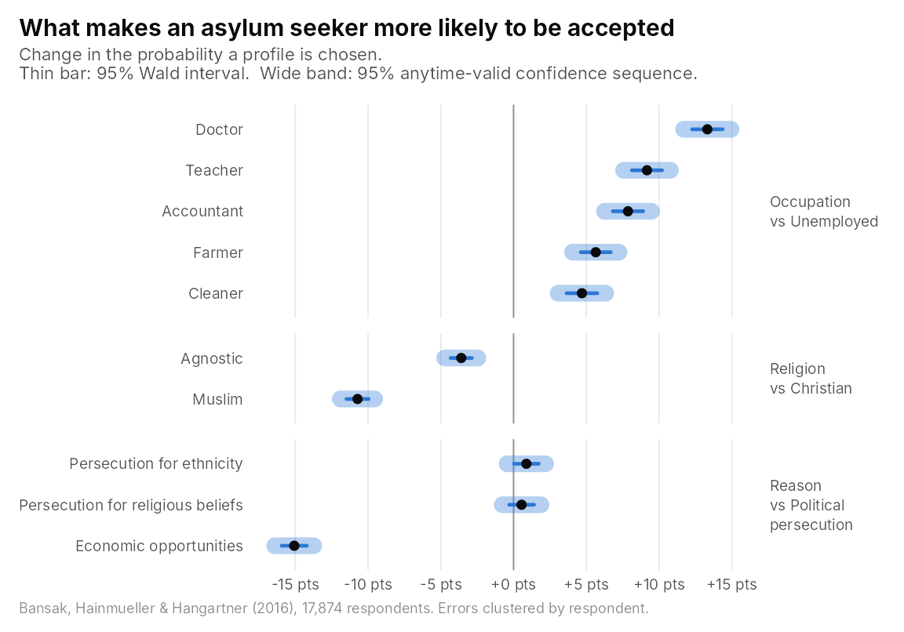
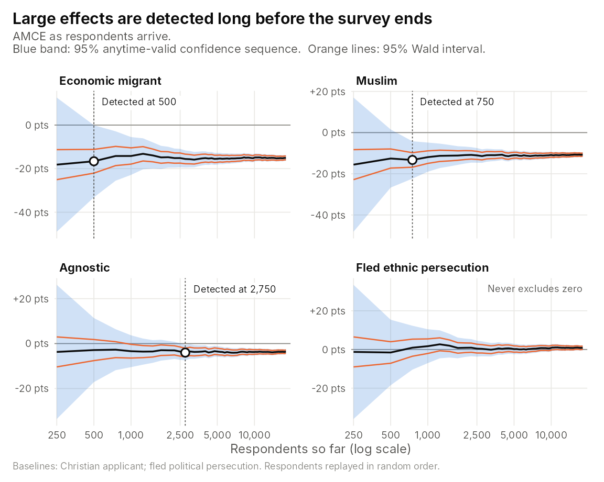

Conjoint experiments show each respondent several randomly generated profiles and ask them to choose between them. The quantities of interest are average marginal component effects (AMCEs), estimated as the coefficients of a linear probability model with standard errors clustered by respondent.
Conjoint surveys are fielded over days or weeks, and it is natural to
watch the estimates as responses arrive. Classical confidence intervals
and p-values are only valid at a single, pre-planned sample size.
avlm turns the same regression into cluster-robust
confidence sequences and anytime-valid p-values (Lindon, 2026;
Molitor, Gosciak and Lindon, 2026). They stay valid however often you
look, so an effect can be declared as soon as the data show it.
The data and the usual fit
Bansak, Hainmueller and Hangartner (2016) asked 18,000 Europeans to choose between pairs of hypothetical asylum seekers, five pairs each. The data are in the Item Response Warehouse, and this is the standard analysis of three of the attributes:
library(irw)
d <- irw_fetch("bansak_2016_asylum", source = "conj")
d$attr_occupation <- relevel(factor(d$attr_occupation), "Unemployed")
d$attr_religion <- relevel(factor(d$attr_religion), "Christian")
d$attr_reason <- relevel(factor(d$attr_reason), "Persecution for political views")
fit <- lm(choice ~ attr_occupation + attr_religion + attr_reason, data = d,
weights = pmin(cov_survey_weight, 6))Making it anytime-valid
One line converts the fit. The respondent clusters are given the same
way as in sandwich::vcovCL():
library(avlm)
afit <- av(fit, g = 2191, cluster = ~id)
summary(afit)
#>
#> Call:
#> lm(formula = choice ~ attr_occupation + attr_religion + attr_reason,
#> data = d, weights = pmin(cov_survey_weight, 6))
#>
#> Residuals:
#> Min 1Q Median 3Q Max
#> -1.6078 -0.4170 0.0216 0.4123 1.8214
#>
#> Coefficients:
#> Estimate Std. Error t value p value
#> (Intercept) 0.51439 0.00492 104.62 < 2e-16
#> attr_occupationAccountant 0.07864 0.00533 14.76 < 2e-16
#> attr_occupationCleaner 0.04698 0.00539 8.71 6.9e-15
#> attr_occupationDoctor 0.13320 0.00538 24.74 < 2e-16
#> attr_occupationFarmer 0.05650 0.00528 10.71 < 2e-16
#> attr_occupationTeacher 0.09171 0.00531 17.26 < 2e-16
#> attr_religionAgnostic -0.03595 0.00376 -9.57 < 2e-16
#> attr_religionMuslim -0.10723 0.00389 -27.55 < 2e-16
#> attr_reasonPersecution for ethnicity 0.00880 0.00436 2.02 0.49
#> attr_reasonPersecution for religious beliefs 0.00552 0.00437 1.26 1.00
#> attr_reasonSeeking better economic opportunities -0.15072 0.00443 -34.04 < 2e-16
#> (1470 observations deleted due to missingness)
#> Multiple R-squared: 0.033, Adjusted R-squared: 0.033
#> F-statistic: 353 on 10 and 17873 DF, p-value: <2e-16
#> Anytime-Valid: TRUE (g = 2191)
#> Robust Standard Error Type: CR1
#> Clusters: 17874summary() returns the familiar regression table. The
standard errors are CR1 cluster-robust, and the p-values are
anytime-valid. Muslim applicants are about 11 points less likely to be
chosen than Christian ones, and economic migrants about 15 points less
likely than people fleeing political persecution. Both effects are
overwhelming even under anytime-valid inference.
confint(afit) gives the matching 95% confidence
sequences.
Confidence intervals and confidence sequences
A confidence sequence is a little wider than the classical interval computed on the same data. That extra width is the price of being allowed to look at the data at any time:

Detecting effects in flight
Now suppose the survey had been analysed while it was fielded, re-running the regression after every 250 respondents. The data do not record the order in which people responded, so we replay the respondents in a random order:
set.seed(2016)
arrival <- sample(unique(d$id))
d$arrival <- match(d$id, arrival)
looks <- seq(250, length(arrival), by = 250)
terms <- c("attr_reasonSeeking better economic opportunities", "attr_religionMuslim",
"attr_religionAgnostic", "attr_reasonPersecution for ethnicity")
path <- do.call(rbind, lapply(looks, function(n_resp) {
fit_n <- lm(choice ~ attr_occupation + attr_religion + attr_reason,
data = d[d$arrival <= n_resp, ], weights = pmin(cov_survey_weight, 6))
cs <- confint(av(fit_n, g = 2191, cluster = ~id), parm = terms)
data.frame(respondents = n_resp, term = terms, est = coef(fit_n)[terms],
av_lo = cs[, 1], av_hi = cs[, 2])
}))Because the confidence sequences hold simultaneously at every look, an effect can be declared the first time its sequence excludes zero, with no penalty for having looked before.

The penalty for economic migrants is detected after 500 respondents, which is 2.8% of the survey. The Muslim penalty is detected after 750 respondents (4.2%), and the smaller Agnostic penalty after 2,750 (15.3%). Each of these is a valid conclusion at the moment it is reached. A fixed-n analysis would have had to wait for all 18,021 respondents. The difference between ethnic and political persecution is close to zero, and the confidence sequence never excludes zero, however long you watch.
References
Bansak, K., Hainmueller, J. and Hangartner, D. (2016). How economic, humanitarian, and religious concerns shape European attitudes toward asylum seekers. Science, 354(6309), 217–222.
Lindon, M. (2026). Anytime-Valid Inference in Linear Models with Clustered Outcomes: Exact Multivariate Tests and Cluster-Robust Confidence Sequences. arXiv:2610.25613.
Molitor, Gosciak and Lindon (2026). Anytime-Valid Inference in Conjoint Experiments. arXiv:2610.28979.